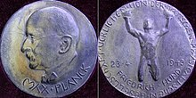

Awards
-
1921 Nobel Peace Prize
- For services to Theoretical Physics, and especially for his discovery of the law of the photoelectric effect.

1925 Copley Medal
-
Outstanding achievements in research in any branch of science

1926 Gold Medal of the Royal Astronomical Society
-
Outstanding personal researches in the fields of astronomy and geophysics

1929 Max Planck Medal
-
The highest award of the German Physical Society, the world's largest organization of physicists, for extraordinary achievements in theoretical physics.

1931 Prix Jules Janssen
Given to a professional French astronomer or to an astronomer of another nationality in recognition of astronomical work in general, or for services rendered to Astronomy.

1936 Franklin Institute Award
World-changing scientists, engineers, inventors, and industrialists—all of whom reflect Benjamin Franklin's spirit of curiosity, ingenuity, and innovation.

|